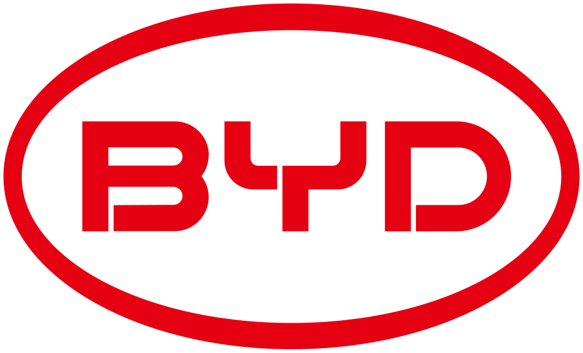

비야디 BYD Company
비야디(BYD Company)는 중국 광둥성 선전시에 본사를 둔 다국적 제조업 복합기업이다. 자동차, 전자 부품, 충전식 배터리 등을 생산하는 수직적 통합 구조의 기업이다.
최종 업데이트

비야디는 어떤 브랜드인가
중국 선전시에 본사를 둔 제조업 복합기업으로, 여러 주요 자회사를 거느린 수직적 통합 구조의 기업이다. 자동차를 생산하는 비야디 자동차, 전자 부품 및 조립을 담당하는 비야디 일렉트로닉스, 자동차 부품과 전기자동차 배터리 회사들의 브랜드명인 FinDreams 등을 둔다.
가장 큰 자회사인 비야디 자동차는 세계 최대의 플러그인 전기자동차 제조업체가 되었다. 2022년부터 중국에서 여러 국유기업에 이어 민간 부문 최대의 고용주가 되었으며, 2024년 9월 기준 총 900,608명을 고용한다.
FinDreams Battery를 통해 2024년 기준 17%의 시장 점유율을 기록하며 CATL에 이어 세계 2위의 전기차 배터리 생산 업체이다. 주식은 홍콩 증권거래소(H주)와 선전 증권거래소(A주)에 상장되었고, 2024년 포춘 글로벌 500에서 143위를 차지했다.
비야디는 어떻게 시작되고 성장했나
비야디는 1995년 2월 왕촨푸에 의해 전지 제조 회사로 설립되었다. 당시 29세였던 왕촨푸는 베이징 비철금속 연구원의 부관리자로 근무하던 중, 일본 기업들이 NiCd에서 니켈-금속 수소화물 전지(NiMH)와 리튬 이온 전지로 전환하는 데서 생기는 기회를 포착해 선전으로 이주했다.
1996년 산요로부터 주문을 확보하며 글로벌 배터리 공급망에 진입했고, 2002년 7월까지 세계 최고의 NiCd 배터리 제조업체가 되었다. 2003년에는 비야디 자동차를 설립했으며, 자동차 사업은 2009년부터 매출의 50% 이상을 차지해 2023년에는 그 비중이 80%를 넘어섰다.
비야디의 브랜드 아이덴티티는 무엇인가
배터리 제조에서 출발해 자동차, 전자 부품, 배터리를 아우르는 수직적 통합 구조를 갖춘 중국 기업이다. 'Build Your Dreams'라는 역두문자어 슬로건을 사용한다.
비야디의 대표 제품과 서비스는 무엇인가
비야디의 사업은 자동차, 전자 부품 및 조립, 자동차 부품과 배터리로 구성된다. 자동차 부문에서는 2005년 4월부터 일반 가솔린 차량인 비야디 F3를 생산했고, 2008년에는 첫 플러그인 하이브리드 차량인 비야디 F3 DM을, 2009년에는 첫 양산형 배터리식 전기자동차인 비야디 e6를 생산했다.
이 밖에 충전식 배터리(핸드셋용 배터리, 전기자동차 배터리, 에너지 저장 시스템 등), 지게차, 태양 전지판, 반도체, 도시 철도 시스템을 생산한다. 2016년에는 Skyrail 브랜드로 개발한 모노레일 시제품을 공개했고, 첫 공공 노선은 2018년 인촨시에서 개통되었다.
비야디는 지금 어떤 상태인가
2024년 9월 기준 연구개발(R&D) 인력 104,003명을 포함해 총 900,608명을 고용한다. 2020년에는 다른 자동차 회사에 부품을 공급할 목적으로 FinDreams를 설립했고, 2021년부터는 유럽, 라틴아메리카, 동남아시아, 호주 등 주요 시장으로 승용차를 수출하기 시작했다.
2003년부터 2023년 사이 13,000개 이상의 특허를 제출했으며, 버크셔 해서웨이는 2025년 9월까지 비야디에 대한 투자를 완전히 회수했다.
비야디 로고는 어떻게 변해왔나
자주 묻는 질문
비야디는 어느 나라 브랜드인가요?
비야디는 중국의 모빌리티 브랜드입니다.
비야디는 언제 설립되었나요?
비야디는 1995년 설립되었습니다.
비야디의 브랜드 아이덴티티는 무엇인가요?
배터리 제조에서 출발해 자동차, 전자 부품, 배터리를 아우르는 수직적 통합 구조를 갖춘 중국 기업이다.
비야디의 대표 제품은 무엇인가요?
비야디의 사업은 자동차, 전자 부품 및 조립, 자동차 부품과 배터리로 구성된다.
비야디는 현재 어떤 상태인가요?
2024년 9월 기준 연구개발(R&D) 인력 104,003명을 포함해 총 900,608명을 고용한다.
비야디의 창업자는 누구인가요?
비야디의 창업자는 루샹양입니다(위키데이터 기준).
비야디의 본사는 어디에 있나요?
비야디의 본사는 선전시에 있습니다(위키데이터 기준).
출처와 검증
비야디 관련 참고: 공식 웹사이트 · 위키데이터 Q2608329 · 한국어 위키백과 · 영어 위키백과. 브랜드명은 한글과 원어를 함께 표기하되 데이터에 없는 표기는 만들지 않습니다. 기원 국가·설립연도는 검수된 정의문에서 확인된 값을 우선하고, 없을 때만 공식 웹사이트 URL이 일치하는 위키데이터 개체의 값을 씁니다. 탄생일의 월·일은 위키데이터, 위키백과 정보상자, 본문 가운데 같은 연월로 확인되는 값만 싣고, 출처끼리 다르면 싣지 않습니다. 위키데이터 값은 2026-11-13 기준입니다.